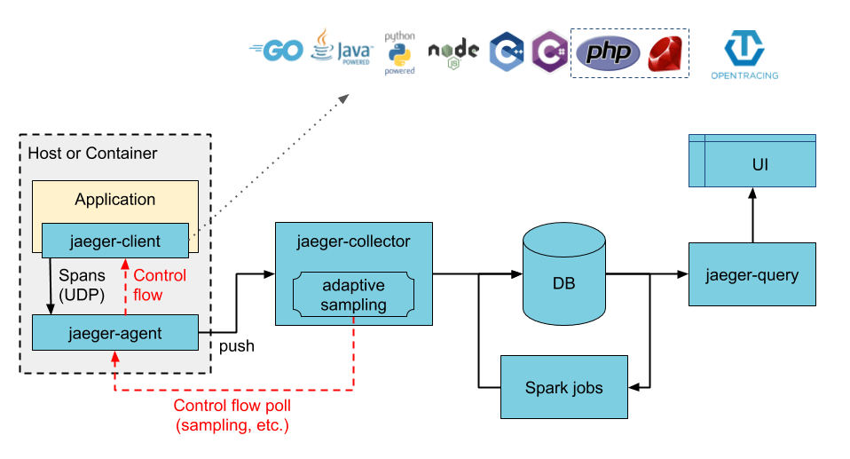
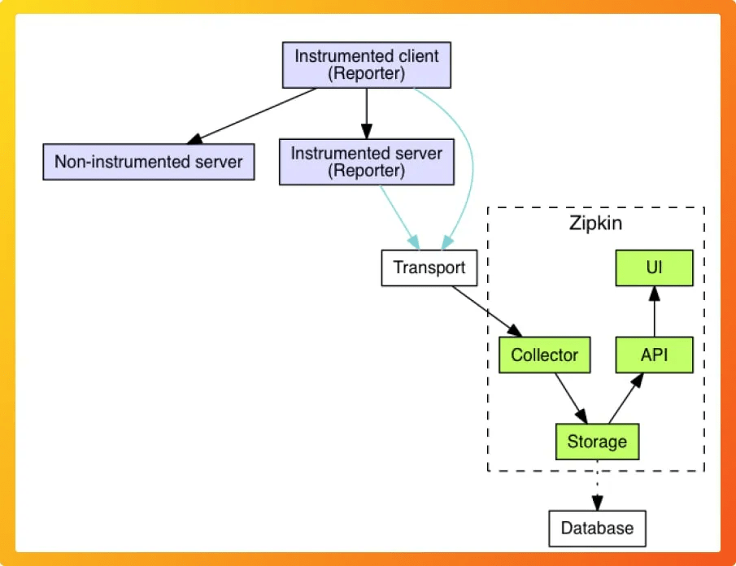
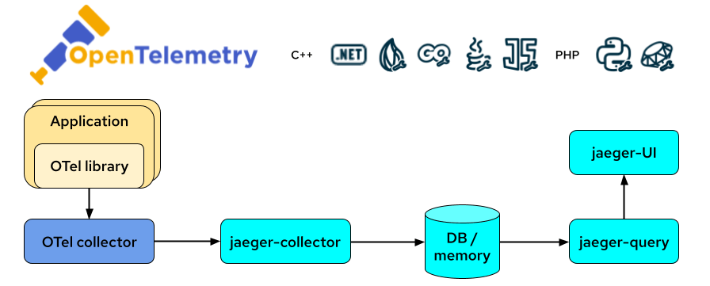
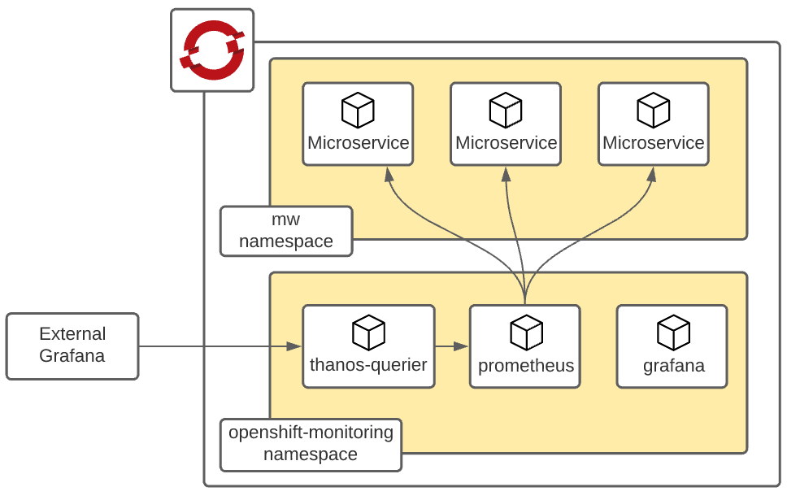
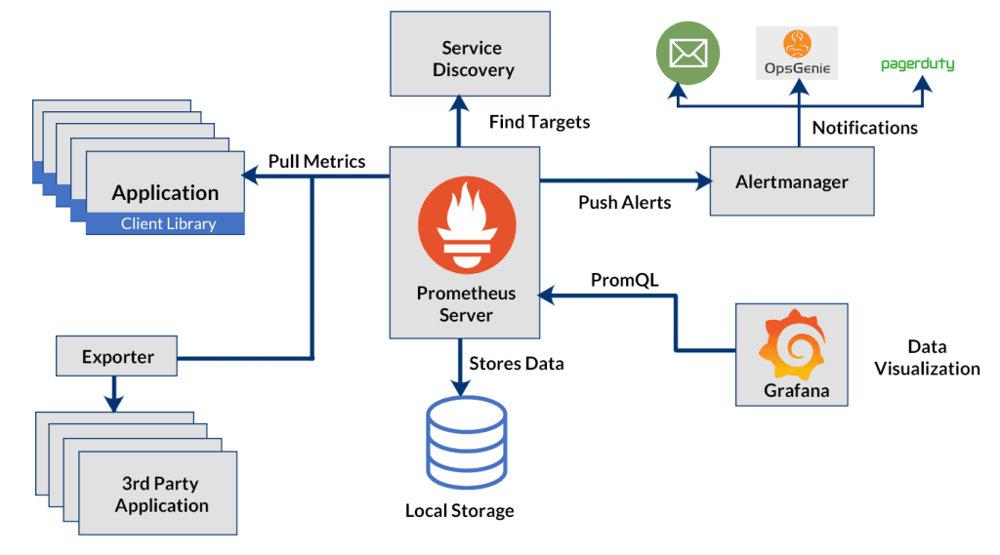

Distributed Tracing in OpenShift: Tools and Techniques
In today's microservices architecture, distributed tracing has become an essential practice for monitoring and debugging complex systems. OpenShift, as a powerful Kubernetes-based platform, offers various tools and techniques for implementing distributed tracing. This blog post delves into the importance of distributed tracing, how it works in OpenShift, and the tools available for effective tracing.
What is Distributed Tracing?
Distributed tracing is a method used to track and monitor the interactions between services in a microservices architecture. It helps in understanding the flow of requests across different services, identifying performance bottlenecks, and diagnosing errors.
Key Benefits of Distributed Tracing:
-
Performance Monitoring: Identifies slow services and bottlenecks.
-
Error Diagnosis: Pinpoints where errors are occurring in the service chain.
-
Dependency Visualization: Maps out service dependencies and their interactions.
-
Improved Debugging: Provides a detailed view of request flows for better debugging.
How Distributed Tracing Works in OpenShift
OpenShift, built on Kubernetes, manages containerized applications and services. To implement distributed tracing in OpenShift, you need to instrument your services to generate trace data and use a tracing backend to collect and visualize this data.
Steps to Implement Distributed Tracing:
-
Instrument Services: Modify your services to generate trace data. This usually involves integrating a tracing library into your code.
-
Deploy Tracing Agents: Deploy agents that collect trace data from your services.
-
Set Up Tracing Backend: Use a tracing backend to store and visualize the trace data.
Tools for Distributed Tracing in OpenShift
Several tools are available for distributed tracing in OpenShift. Each tool has its unique features and integrations, making it suitable for different use cases.

1. Jaeger
Jaeger is an open-source tool designed for monitoring and troubleshooting microservices-based systems.
-
Features:
-
End-to-end distributed tracing.
-
Root cause analysis.
-
Performance and latency optimization.
-
OpenTracing compliant.
-
Integration with OpenShift:
-
Easily deployable using OpenShift templates and operators.
-
Supports automatic instrumentation with libraries for various programming languages.
2. Zipkin

Zipkin is another open-source distributed tracing system.
-
Features:
-
Collects timing data for requests.
-
Visualizes service dependencies.
-
Provides tools for analyzing trace data.
-
Supports multiple data stores.
-
Integration with OpenShift:
-
Can be deployed using OpenShift templates.
-
Compatible with OpenTracing APIs for easier instrumentation.
3. OpenTelemetry

OpenTelemetry is a unified set of APIs, libraries, agents, and instrumentation to provide observability.
-
Features:
-
Combines traces, metrics, and logs.
-
Supports multiple exporters and backends.
-
Provides automatic instrumentation for many libraries and frameworks.
-
Integration with OpenShift:
-
Deployment using OpenShift Operator.
-
Supports a wide range of programming languages and environments.
4. Prometheus and Grafana


While primarily known for metrics, Prometheus and Grafana can also be used for distributed tracing, especially with the help of the Grafana Tempo project.
-
Features:
-
Real-time monitoring and alerting.
-
Rich visualization capabilities.
-
Integration with various data sources.
-
Integration with OpenShift:
-
Easily deployable using OpenShift Operators.
-
Can be combined with Jaeger or Zipkin for a more comprehensive observability solution.
Best Practices for Distributed Tracing in OpenShift
To get the most out of distributed tracing in OpenShift, follow these best practices:
-
Consistent Instrumentation: Ensure that all services are consistently instrumented for tracing. Use a common tracing library and follow standardized practices.
-
Centralized Logging: Combine tracing data with centralized logging to get a complete picture of your application's health.
-
Performance Monitoring: Regularly monitor the performance metrics and trace data to identify and address issues proactively.
-
Security and Compliance: Ensure that trace data does not include sensitive information and complies with data protection regulations.
Conclusion
Distributed tracing is a crucial practice for managing and debugging microservices architectures. With OpenShift, you have access to powerful tools like Jaeger, Zipkin, OpenTelemetry, Prometheus, and Grafana that can help you implement effective distributed tracing. By following best practices and leveraging these tools, you can gain deep insights into your application's performance and reliability.
Embrace distributed tracing in OpenShift to enhance your observability and ensure your microservices run smoothly.
Imported from rifaterdemsahin.com · 2024